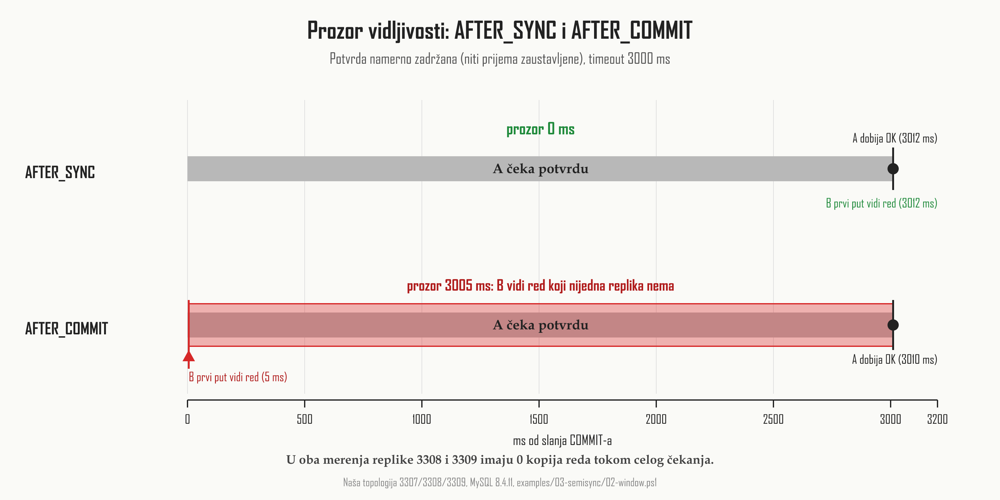
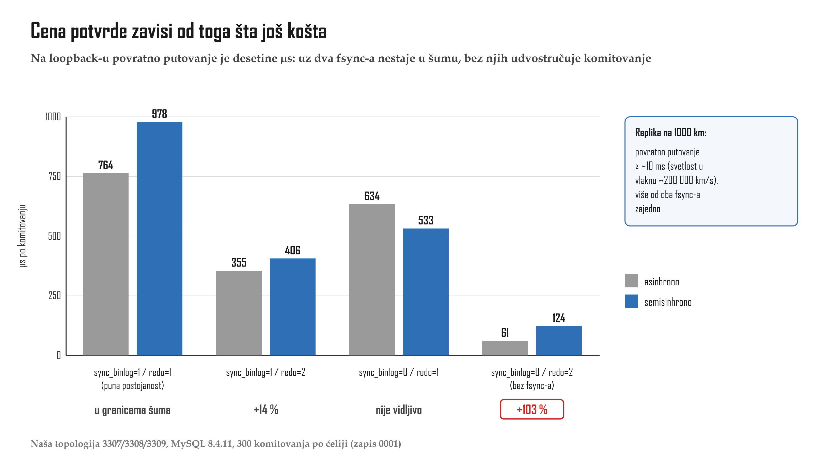

![Dve kolone sa istim nizom od četiri koraka: priprema u redo logu, upis i fsync binarnog loga
(oznaka: odluka, posle pada oporavak komituje T), komitovanje u InnoDB-u (oznaka: vidljivost,
druge sesije čitaju T), OK klijentu. U koloni AFTER_SYNC žuto polje 'čeka potvrdu replike'
stoji između upisa u binarni log i komitovanja u InnoDB-u, a zelena napomena kaže da niko ne
vidi T pre potvrde. U koloni AFTER_COMMIT žuto polje stoji između komitovanja u InnoDB-u i
odgovora klijentu, a crvena zagrada preko komitovanja i čekanja nosi natpis: prozor, drugi
vide T, replika je još nema.](../viz/viz-l04-tacke-cekanja-1791747054613.png)
AFTER_COMMIT otvara prozor u kome drugi vide T koju
nijedna replika nema. Izvor: MySQL 8.4 Reference Manual, 19.4.10 i opis promenljive
rpl_semi_sync_source_wait_point.Lekcija 04 · Poglavlje 4 (Semisinhrona replikacija i značenje potvrde)
Lekcija 0003 je završila pravilom oporavka: binarni log odlučuje. Ova lekcija stavlja čekanje na repliku u isti niz komitovanja i meri, na živoj topologiji, šta se dešava kada izvor padne usred tog čekanja.
AFTER_SYNC i AFTER_COMMIT, i zašto samo
AFTER_COMMIT otvara prozor u kome klijent čita transakciju koju failover zatim briše;
(3) zašto se stari izvor posle failover-a ne vraća, iako ga MySQL ne odbija;
(4) šta se dešava na isteku vremena i po čemu operator to primećuje;
(5) zašto je cena potvrde pitanje udaljenosti replike.
Na replici rade dve odvojene niti, i samo jedna od njih razgovara sa izvorom.
Nit prijema (receiver) preuzima događaje iz binarnog loga izvora i upisuje ih u
lokalnu datoteku, relay log. Nit primene (applier) ne zna za izvor: čita
relay log sa lokalnog diska i menja tabele. Podela na dve niti je odluka u dizajnu, a ne
nužnost. Preuzimanje je brzo, a primena spora, pa replika može da ima sve preuzeto, a ništa primenjeno
(zapis 0001: relay log je narastao na 2,9 MB za 3 s, a primena je kasnila još 10 s).
Za transakciju T na replici zato postoje tri stanja: (a) stigla je u memoriju niti
prijema, (b) upisana je u relay log i nad njim je urađen fsync,
(c) primenjena je i vidljiva na replici. Potvrda (acknowledgement) mora da preživi pad
i mora da bude jeftina, jer klijent čeka. Stanje (a) ne preživljava pad procesa, a stanje (c) je
nepotrebno sporo. Ostaje (b), i MySQL bira upravo njega:
Iz toga sledi ono što potvrda ne znači: ne znači da je replika primenila T,
pa ni da je T vidljiva na replici. Priručnik to kaže izričito: potvrda je samo
an acknowledgement from the replicas, not that the events have been fully executed and committed
on the replica side
.
Na izvoru se komitovanje odvija u nizu koji znaš iz lekcije 0003. Na dva pitanja o tom nizu odgovaraju dva različita dela sistema:
| „Šta će biti sa T ako server sada padne?“ | odgovara binarni log: ako je T u njemu, oporavak je komituje (pravilo dvofaznog komitovanja) |
| „Šta sesija B vidi ako sada čita?“ | odgovara InnoDB: obično čitanje vidi samo transakcije koje je InnoDB već komitovao; pripremljenu transakciju ne vidi i ne čeka na nju |
Sesija B nikad ne čita binarni log, nego tabele kroz InnoDB. Zato upis u binarni log ne može da učini red vidljivim. Vidljivim ga čini samo komitovanje u InnoDB-u. Između koraka „komitovanje u InnoDB-u“ i „OK klijentu“ prolazi vreme, i ako se tu ubaci čekanje, drugi već vide T, a pisac još nije dobio OK.
Izvor čeka potvrdu negde u svom nizu komitovanja. Pre upisa u binarni log ne može, jer nema šta da
pošalje (nit koja šalje log šalje ono što je u binarnom logu). Posle odgovora klijentu ne sme, jer bi
to bila asinhrona replikacija. Ostaju tačno dva mesta, i
rpl_semi_sync_source_wait_point bira jedno od njih:
AFTER_COMMIT otvara prozor u kome drugi vide T koju
nijedna replika nema. Izvor: MySQL 8.4 Reference Manual, 19.4.10 i opis promenljive
rpl_semi_sync_source_wait_point.Podrazumevana vrednost je AFTER_SYNC. Promenljiva je dinamička, pa se režim menja bez
ponovnog pokretanja servera. Istorijska napomena, kao činjenica, a ne kao nešto što iz nečega sledi:
pre MySQL-a 5.7.2 jedini način rada je bio onaj koji se danas zove AFTER_COMMIT.
Preduslov: topologija pokrenuta u asinhronom stanju
(examples\00-setup\topology.ps1 start); port 3306 se ne dira. Skripta sama zaustavlja i
ponovo pokreće niti prijema; posle nje je semisinhrona replikacija i dalje uključena.
cd examples\03-semisync # semisync ON, 2 clients, AFTER_SYNC .\01-semisync-on.ps1 # writer = its own mysqlsh process; reader = held session polling 3307 .\02-window.ps1 -WaitPoint AFTER_SYNC -Id 1001 .\02-window.ps1 -WaitPoint AFTER_COMMIT -Id 1002
wait_point : AFTER_SYNC wait_point : AFTER_COMMIT writer_result : OK writer_result : OK writer_commit_ms : ~timeout writer_commit_ms : ~timeout B_first_sees_row_ms : ~timeout B_first_sees_row_ms : nekoliko ms window_ms : 0 window_ms : ~timeout is the row on the replicas? 3308 : 0 / 3309 : 0 (u oba slučaja)
Kako se ovo čita: potvrda je namerno zadržana, jer su niti prijema
zaustavljene, pa pisac čeka do isteka vremena. Pod AFTER_COMMIT sesija B sve to vreme
čita red koji postoji samo na 3307. Pod AFTER_SYNC ga vidi tek kad pisac dobije
odgovor. Uzgred se vidi i istek vremena: pisac dobija OK, a ne grešku (odeljak 6).

AFTER_COMMIT druga sesija je 3005 ms čitala red koji
nijedna replika nije imala; pod AFTER_SYNC prozor je 0 ms. Potvrda je namerno zadržana
(niti prijema zaustavljene, timeout 3000 ms); čitač je proveravao svakih 0,14 ms. Izmereno na našoj
topologiji, MySQL 8.4.11, examples/03-semisync/02-window.ps1.Failover (preuzimanje uloge izvora nakon otkaza) i switchover (planirana promena uloga) definišu se jedan naspram drugog. Kod switchover-a je izvor ispravan: operator ga zaustavi, sačeka da replika primi sve i tek onda zameni uloge, pa nijedna potvrda ne ostaje „u letu“. Kod failover-a izvor je otkazao i ništa nije predao. Samo failover zato može da izgubi ono što je bilo u prozoru.
Isti eksperiment, ali sa pravim padom: dok pisac čeka potvrdu, proces mysqld na 3307 se
ubija, a 3308 postaje novi izvor. Izvedeno dva puta, jednom pod svakim režimom:
![Dva panela sa istih pet koraka. AFTER_COMMIT, id 2001: A šalje COMMIT i čeka; B čita 3307
posle 1,5 s i vidi red (crveno); proces mysqld na 3307 ubijen, A dobija grešku veze; failover
na 3308, red na 3308 je 0, B je videla podatak koji je failover izbrisao (crveno); stari izvor
posle oporavka ima red, višak GTID 17679, povezan kao replika od 3308 sa Yes/Yes i nula
grešaka, ali se podaci razlikuju (žuto). AFTER_SYNC, id 3001: isti koraci, ali B ne vidi red
(zeleno) i niko nije video izgubljeno (zeleno); stari izvor ipak ima red, višak GTID 17682,
i povezivanje opet prolazi bez greške. Donji natpis: AFTER_SYNC štiti klijente, ali nijedan
režim ne čini stari izvor ponovo upotrebljivim.](../viz/viz-l04-pad-i-failover-1791747051999.png)
AFTER_COMMIT failover je izbrisao red koji je druga sesija
već pročitala; pod AFTER_SYNC niko nije video izgubljeno, ali u oba slučaja stari izvor
posle oporavka ima transakciju koju novi izvor nema. Pad procesa izazvan namerno
(Stop-Process -Force), potvrda zadržana. Izmereno na našoj topologiji, MySQL 8.4.11,
examples/03-semisync/03-crash-failover.ps1 i 04-rejoin.ps1.Pisac A ni u jednom slučaju nije dobio OK (Lost connection to MySQL server during query
), pa
njemu ništa potvrđeno nije izgubljeno. Anomalija je kod čitaoca: pod
AFTER_COMMIT sesija B je pročitala red koji posle failover-a ne postoji ni na jednom
serveru koji radi. To je anomalija konzistentnosti, a ne napomena o
performansama: pitanje nije koliko je AFTER_COMMIT brži, nego šta je B smela da
vidi. Priručnik:
Pod AFTER_SYNC je transakcija u trenutku pada bila samo pripremljena i
upisana u binarni log, i niko je nije video (B je pročitala 0). Posle ponovnog pokretanja red ipak
postoji na 3307. To je pravilo oporavka iz lekcije 0003: pripremljena transakcija koja je u binarnom
logu komituje se. Oporavak ne zna za potvrdu. Zato AFTER_SYNC štiti
klijente, ali ne i stari izvor:
„Must be discarded“ je pravilo za operatora, ne nešto što server sprovodi. Kada smo stari izvor
povezali kao repliku novog (SOURCE_AUTO_POSITION = 1), obe niti su radile, nije bilo
nijedne greške i Seconds_Behind_Source je bio 0, a CHECKSUM TABLE se
razlikovao. Provera po GTID-u to ne hvata. Greška ER_REPLICA_HAS_MORE_GTIDS_THAN_SOURCE
(1885) javlja se samo kada replika ima GTID-ove sa UUID-om samog izvora koje izvor
nema (19.1.3.3).
Višak na starom izvoru nosi njegov sopstveni UUID, pa ga provera ne vidi. Operator ga nalazi sam:
-- On the new source (3308): what does the old source have that we do not? SELECT GTID_SUBTRACT('<gtid_executed of 3307>', @@gtid_executed) AS extra_on_old_source;
extra_on_old_source 92f36f51-b420-11f1-aa37-9c6b001d863b:17682
Zašto novi izvor ne bi jednostavno „preuzeo“ višak? Zato što je pisac dobio grešku, a ispravna aplikacija tada ponavlja upis, i to na novom izvoru. Spajanje dva loga koja su se razdvojila zahteva rešavanje sukoba, a to je problem sistema sa više leadera. Replikacija sa jednim izvorom ga izbegava baš tako što podaci teku samo u jednom smeru.
Preduslov: 01-semisync-on.ps1 je pokrenut (semisinhrona
replikacija ON, 2 klijenta). Ubija proces na 3307 i menja uloge; posle obavezno
pokreni 09-restore.ps1, koji vraća asinhrono stanje mirovanja i proverava da su
gtid_executed na sva tri čvora identični.
# kill 3307 mid-wait, promote 3308 .\03-crash-failover.ps1 -WaitPoint AFTER_COMMIT -Id 2001 # restart 3307, attach it to 3308 .\04-rejoin.ps1 -Id 2001 # back to: 3307 source, async, no errant GTIDs .\09-restore.ps1
B reads id=2001 on 3307 : 1 (pod AFTER_SYNC: 0) writer A: "result":"ERROR", "Lost connection to MySQL server during query" after failover ... NEW source 3308 : 0 old source after recovery holds id : 1 extra_on_old_source : <UUID 3307>:N old_is_subset_of_new : 0 Replica_IO_Running: Yes Replica_SQL_Running: Yes Last_IO_Errno: 0 Last_SQL_Errno: 0 CHECKSUM TABLE: 3307 se razlikuje od 3308 i 3309
Kako se ovo čita: svi indikatori kanala su zeleni, a podaci se razlikuju. Sistem ne odbija stari izvor; odbacivanje je odluka operatora.
Bez isteka vremena bi jedna mrtva replika zaustavila sve upise na izvoru. MySQL zato posle
rpl_semi_sync_source_timeout milisekundi (podrazumevano 10000) prestaje da čeka, komituje,
vraća običan OK i prelazi u asinhroni režim. To je izbor dostupnosti umesto
konzistentnosti, isto pitanje kao prvo pitanje PACELC-a iz lekcije 0001, i to je
odluka u dizajnu, a ne nešto što iz nečega sledi. Operator može da postavi ogroman
istek vremena i time praktično izabere čekanje.
![Tri trake preko šest faza: normalno, replike nedostupne, istek vremena, asinhrono bez
upozorenja, replike se vraćaju, ponovo semisinhrono. Traka klijenta: svaki COMMIT dobija OK;
prvi posle nestanka replika čeka ceo timeout (izmereno 1 004 293 µs uz timeout 1000 ms),
sledeći traje 782 µs; natpis: klijent nikad ne dobija grešku. Traka statusa: ON, pa OFF na
isteku vremena, pa ON kad se replike vrate. Traka no_tx: 0, raste tokom asinhrone faze i ostaje
visok i kad se status vrati na ON; natpis: jedini trajni trag. Desno lista signala za
operatora, i crveno: clients nije signal, ostao je 2 sa zaustavljenim nitima prijema.](../viz/viz-l04-tiha-degradacija-1791747084403.png)
examples/03-semisync/02-window.ps1).Klijent ne može da primeti istek vremena. Može samo operator, i to ako gleda. Signali koji su se danas videli na 3307:
Rpl_semi_sync_source_status | ON ili OFF: samo trenutno stanje; ujutru je opet ON, čak i ako je noću bio OFF |
Rpl_semi_sync_source_no_tx | broj komitova bez potvrde, trajni trag (izmereno 0 → 1 → 2) |
Rpl_semi_sync_source_no_times | koliko puta se izvor prebacio u asinhroni režim (izmereno 0 → 1 → 2) |
Rpl_semi_sync_source_yes_tx | broj potvrđenih komitova; prestaje da raste |
Rpl_semi_sync_source_wait_sessions | sesije koje upravo čekaju potvrdu |
log grešaka, MY-011153 | Timeout waiting for reply of binlog … |
| vreme komitovanja | nagli skok na vrednost isteka vremena (izmereno 3010 ms i 3012 ms) |
Rpl_semi_sync_source_clients | nije pouzdan signal: ostao je 2, iako su obe niti prijema bile zaustavljene |
Rpl_semi_sync_source_timeouted. On ne postoji ni u priručniku za 8.4
ni na živom serveru (SHOW STATUS LIKE 'Rpl_semi_sync%' na 3307 izlistava 14 promenljivih,
među kojima nema te). Lista signala iznad je napravljena iznova, iz onoga što server zaista prikazuje.
Usporenje je at least the TCP/IP roundtrip time to send the commit to the replica and wait for the
acknowledgment of receipt by the replica
(19.4.10). Komitovanje
je zbir: fsync binarnog loga, fsync redo loga, pa povratno putovanje do replike. Prva dva sabirka bira
matrica iz lekcije 0003, a treći mreža.
t(commit) ≈ t(fsync binary log) + t(fsync redo log) + t(round trip to the replica)

Na jednoj mašini je povratno putovanje desetine mikrosekundi. Svetlost u optičkom vlaknu prelazi oko 200 000 km/s, pa za repliku udaljenu 1000 km povratno putovanje iznosi najmanje oko 10 ms, desetak puta više od oba fsync-a zajedno. Operator, dakle, ne bira samo da li je potvrda uključena, nego koliko daleko je replika koja mora da potvrdi. Odatle vodi poglavlje 6.
MySQL ovde nudi četiri podesive tačke: rpl_semi_sync_source_wait_point,
rpl_semi_sync_source_timeout, rpl_semi_sync_source_wait_for_replica_count
(podrazumevano 1) i udaljenost replike. Na dva mesta je sistem ćutao dok je garancija nestajala: posle
isteka vremena (OK bez upozorenja) i pri povratku starog izvora (zeleni indikatori, različiti podaci).
U oba slučaja primećivanje je posao operatora. Konzistentnost je odluka operatora, a
ne svojstvo sistema.
Svako pitanje navodi stanje topologije od koga zavisi. Odgovori iz glave, pa tek onda proveri.
1. Izvor je dobio potvrdu za T od replike 3308. Šta je ta potvrda utvrdila o T na 3308?
Potvrda se šalje u stanju (b): T je u relay logu, na disku. Primena dolazi kasnije i nije deo potvrde.
2. Na izvoru je T upisana u binarni log (uz fsync), ali je InnoDB još nije komitovao. Sesija B čita tabelu. Šta važi?
Vidljivost određuje InnoDB, a oporavak binarni log. To su dva različita pitanja.
3. Semisinhrona replikacija, potvrda još nije stigla, pisac A čeka OK. U kom režimu sesija B na izvoru već vidi T?
AFTER_COMMIT čeka posle komitovanja u InnoDB-u, pa je T vidljiva pre potvrde. Izmereno: prozor 3005 ms naspram 0 ms.
4. AFTER_COMMIT, niti prijema zaustavljene. B je pročitala red koji A upisuje; 3307 tada padne i 3308 postaje izvor. Šta važi?
Pisac nije dobio OK, pa njemu ništa nije obećano. Ali B je videla podatak koji je failover izbrisao: to je anomalija.
5. AFTER_SYNC, izvor 3307 je ubijen dok je T čekala potvrdu; failover je na 3308. Šta je sa T na 3307 posle ponovnog pokretanja?
Pravilo oporavka ne zna za potvrdu: T je u binarnom logu, pa se komituje. Stari izvor zato ima višak.
6. Stari izvor 3307 ima GTID sa sopstvenim UUID-om koji 3308 nema. Šta se dešava kad ga povežemo kao repliku od 3308 sa SOURCE_AUTO_POSITION = 1?
Greška 1885 važi samo za GTID-ove sa UUID-om novog izvora. Izmereno: Yes/Yes, 0 grešaka, CHECKSUM se razlikuje.
7. Ujutru: Rpl_semi_sync_source_status = ON, no_tx = 4120
(juče 0), nijedna prijavljena greška. Šta operator može da zaključi?
no_tx je trajni trag perioda bez garancije; status pokazuje samo trenutno stanje.
8. Izvor i replika su na istoj mašini, uz punu postojanost (1/1), i potvrda ne pravi merljivu razliku. Šta se dešava sa replikom udaljenom 1000 km?
Potvrda košta povratno putovanje: na 1000 km najmanje oko 10 ms, više od oba fsync-a.
Rezultat: 0 / 0